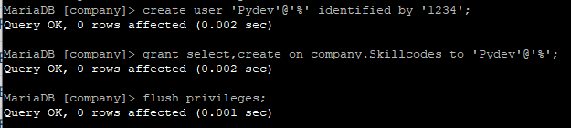
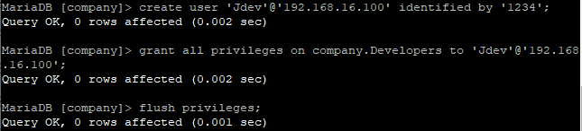
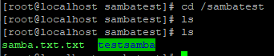
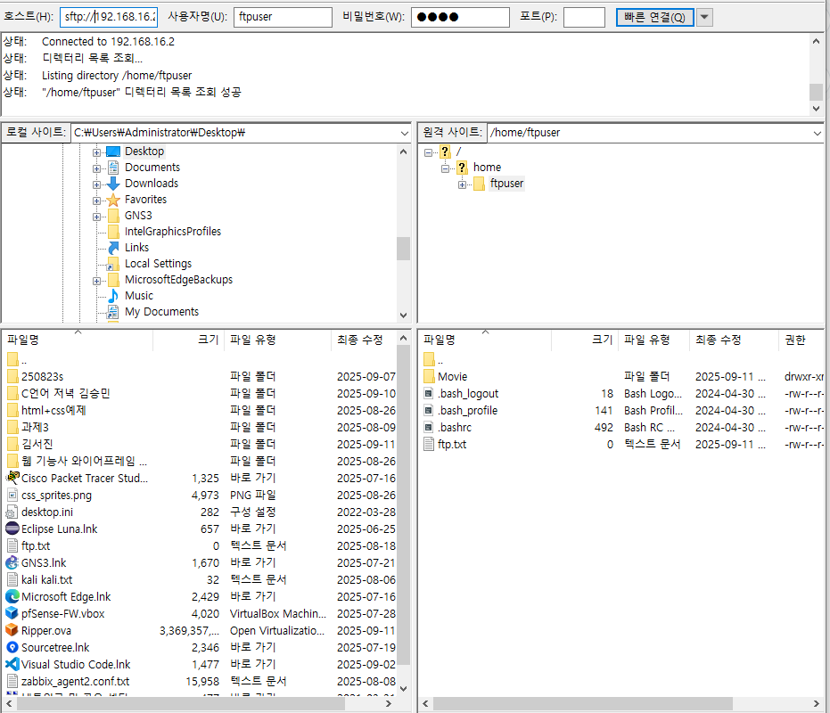
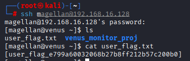
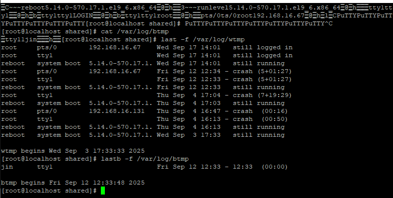
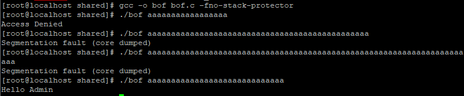

Enterprise Security & Infrastructure Hardening
GNS3와 VirtualBox를 연동하여 가상 네트워크 인프라를 설계하고, 방화벽 정책 수립, 라우터 이중화(HSRP), 보안 서버(VPN, IDS, SIEM) 구축 및 시스템 보안 강화(Hardening)의 전 과정을 통합적으로 수행한 프로젝트입니다.
1) GNS3: Network Infrastructure & Policy
VLAN Configuration
VLAN 구성을 통해 브로드캐스트 도메인을 분리하고 네트워크 세그멘테이션을 실현했습니다.
pfSense Firewall Rules

호스트(192.168.5.50) 정책 설정
- FTP 서비스: 차단(Deny)
- HTTP 서비스: 허용(Allow)
- FTP 서비스: 차단(Deny)
- HTTP 서비스: 허용(Allow)
Cisco ASAv Firewall Rules

Rule 1-1: Inside망 HTTPS 접속 허용

Rule 1-2: Inside망 Telnet 접속 허용

Rule 2: PC7(DNS)에서 R3로의 Ping 허용

Rule 3: R2에서 R4로의 SSH 접속 허용
Router ACL (Access Control List)

R3 라우터 ACL 정책 설정 및 적용 결과
2) VirtualBox: Security Solutions & Hardening
NIDS 침입 탐지 (Snort)

Scenario 1: Kali Linux에서 Web 서버로의 DDoS 공격 탐지

Scenario 2: Kali에서 CTF 서버 대상 /etc/passwd 접근 시도 탐지
MariaDB & PMM Monitoring
PMM(Percona Monitoring and Management)을 통한 DB 모니터링 및 시나리오 기반 권한 부여 실습

PMM 대시보드 메인 화면

Server-Client 에이전트 연결 상태 확인

DB 문제 시나리오 확인

비트 연산 기반 데이터 조회 결과

Cdev: 로컬호스트 전체 권한 부여

Pydev: 특정 테이블 Select/Create 권한 제어

Jdev: 특정 IP 대상 테이블 권한 부여
Samba & NFS Resource Sharing

Windows에서 Samba 공유 자원(testsamba, samba.txt) 생성

Linux 환경에서 실시간 공유 파일 동기화 확인

Rocky Linux NFS Server-Client 연결 및 공유 결과

NMS 연동: nfs.project.com 도메인 설정 결과
FTP / SFTP / FTPS 보안 전송

서버 내 Move 디렉토리 및 ftp.txt 파일 생성 확인

파일질라(FileZilla)를 통해 192.168.16.2 접속 시 생성된 파일 확인

FTPS 보안 연결을 위한 서버 인증서(Certificate) 적용

SFTP 보안 접속 성공 (sftp://192.168.16.2)

FTPS 보안 접속 성공 (ftps://192.168.16.2)
CTF Challenge: Venus
정보 수집부터 권한 상승까지의 전체 침투 테스트 과정을 실습했습니다.
주요 기법: 인증 토큰 우회(ROT13/Base64), 사전 대입 공격(Hydra), CVE-2021-4034 취력점 활용

Nmap/BurpSuite/Hydra를 활용한 User 계정 탈취 및 Flag 획득

CVE-2021-4034 익스플로잇을 통한 Root 권한 상승 및 최종 Flag 획득
Nmap, Burp Suite, Hydra 등을 활용한 상세 풀이 과정 보러가기 (Velog)
Linux System Hardening & DNS

DNS 서버 패스워드 정책 적용 및 Passed 설정

wtmp, btmp 로그 경로 확인 및 접속 기록 분석

Sticky Bit(chmod 1777) 설정
- 1. /tmp/shared 디렉토리 생성 및 권한 1777 부여 (1=Sticky Bit)
- 2. test 사용자가 test.txt 파일 생성
- 3. test2 사용자가 삭제 시도 시 'Operation not permitted' 발생 확인
- 결론: 공용 공간에서 소유자 외 파일 삭제 방지

SetUID 설정: r/project 실행을 통한 Root 권한 상승 확인

BoF Test: 간단한 코드를 이용한 Buffer Overflow 발생 여부 점검

LogAnalyzer를 통한 웹 기반 시스템 로그 시각화

OSSEC: Zabbix, Ubuntu, Rocky 클라이언트 통합 모니터링 확인